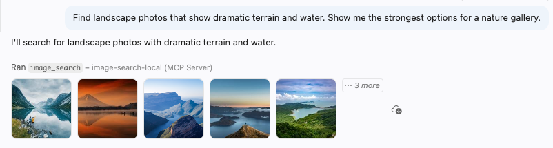
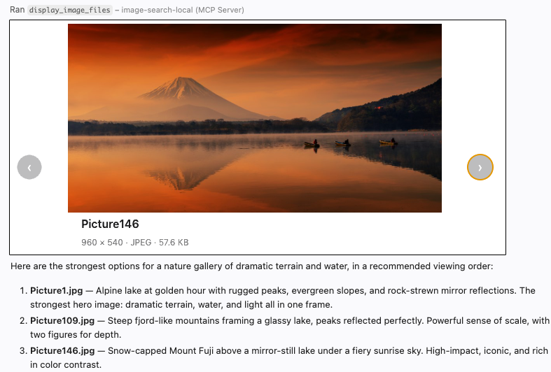

The Model Context Protocol (MCP) is becoming a richer foundation for agent experiences. Beyond calling tools and exchanging text, MCP servers can return binary results and provide interactive apps in clients that support those features, including VS Code.
In this post, I'll use both capabilities to build an MCP server that searches a collection of nature photos with natural language, lets the model inspect the matching images, and presents selected results in an interactive gallery. The same approach can be adapted to product catalogs, digital asset managers, photo archives, and other multimedia libraries.
Let's start by seeing how the server works from a user's perspective.
After connecting VS Code to the deployed MCP server, I can ask a question in GitHub Copilot about the images:
Find landscape photos that show dramatic terrain and water. Show me the strongest options for a nature gallery.
The GitHub Copilot agent realizes that it can use the image search MCP server to answer that question, and it calls the image_search tool with these arguments:
{
"query": "dramatic natural landscapes with mountains and water",
"max_results": 5
}
The tool call returns a mix of binary files and structured data: a thumbnail for each matching image, plus JSON containing its filename, display name, and generated description. The thumbnails let a multimodal model inspect the actual pixels, while the structured content gives the agent compact metadata it can reference in later tool calls.
{
"results": [
{
"filename": "Picture1.jpg",
"display_name": "Picture1.jpg",
"description": "A clear mountain lake surrounded by pine forest and steep rocky peaks. Warm sunlight enters through a gap in the mountains and reflects in the still water among large foreground rocks."
},...
In the GitHub Copilot chat interface, each thumbnail is attached to the tool result. I can click a result to inspect it directly in VS Code, much like a file in the workspace, while the agent can compare the images and their descriptions. Here's what it looks like:

Now let's dive into the code powering that tool call. I built the server using FastMCP, the most popular Python package for writing MCP servers. I declare my tools by wrapping functions in mcp.tool() decorator and annotating the arguments with types and helpful descriptions. The FastMCP library sends this function signature as JSON-schema, and that's how GitHub Copilot decides when and how to call image_search:
@mcp.tool()
async def image_search(
query: Annotated[
str, "Text description of images to find (e.g., 'sunlit mountain lake')"
],
max_results: Annotated[int, "Max number of images to return (1-20)"] = 5,
) -> ToolResult:
"""
Search for images matching a natural language query.
Returns the image data and descriptions.
"""
Inside the function, I use Azure AI Search with hybrid retrieval on both the text query and the query's vector embedding, against a target index that has multimodal embeddings for the images plus LLM-generated descriptions for the images. The tool returns a result that contains both the binary files and the structured content.
results = await search_client.search(
search_text=query,
top=max_results,
vector_queries=[VectorizableTextQuery(
k_nearest_neighbors=max_results, fields="embedding", text=query)],
select="metadata_storage_path,verbalized_image")
blob_service_client = get_blob_service_client()
files: list[File] = []
image_results: list[dict[str, str]] = []
result_index = 0
async for result in results:
result_index += 1
url = result["metadata_storage_path"]
description = result.get("verbalized_image")
container_name, blob_name = get_blob_reference_from_url(url)
blob_client = blob_service_client.get_blob_client(container=container_name, blob=blob_name)
stream = await blob_client.download_blob()
image_bytes = await stream.readall()
image_format = get_image_format(url)
display_name = os.path.basename(blob_name)
file_basename = Path(display_name).stem
thumbnail_bytes = resize_image_bytes(image_bytes, image_format)
files.append(File(data=thumbnail_bytes, format=image_format, name=file_basename))
image_results.append({
"filename": blob_name,
"display_name": display_name,
"description": description})
return ToolResult(
content=files,
structured_content={
"query": query,
"results": image_results})
Displaying selected images
Once the agent finds possible matches, it can reason over the results and select the strongest ones. When the agent is using a multimodal LLM, it can consider both the image content and the generated descriptions. It can then render its choices directly in the conversation using an MCP app: an iframed webpage that renders inside the MCP client. In this case, our app displays a small, JavaScript-powered carousel to navigate easily through the images:

Let's check out the code that powers that MCP carousel app. An app is associated with a tool, so we once again wrap a Python function in @mcp.tool. This time, we pass an AppConfig that points to the image viewer's HTML resource.
@mcp.tool(
app=AppConfig(resource_uri=IMAGE_VIEW_URI)
)
async def display_image_files(
filenames: Annotated[list[str], "List of image filenames to retrieve"]
) -> ToolResult:
"""Fetch images by filename and render them in a carousel display."""
Inside the function, we fetch the selected images from Azure Blob Storage by filename, then return both the binary image data and structured content containing each filename and MIME type.
. blob_service_client = get_blob_service_client()
image_blocks: list[types.ImageContent] = []
image_results: list[dict[str, str]] = []
for filename in filenames:
blob_client = blob_service_client.get_blob_client(container=IMAGE_CONTAINER_NAME, blob=filename)
stream = await blob_client.download_blob()
image_bytes = await stream.readall()
mime_type = get_image_mime_type(filename)
image_blocks.append(
types.ImageContent(
type="image",
data=base64.b64encode(image_bytes).decode("utf-8"),
mimeType=mime_type))
image_results.append({
"filename": filename,
"mimeType": mime_type})
return ToolResult(
content=image_blocks,
structured_content={
"images": image_results,
})
Next, we define the resource that serves the image viewer HTML page. We wrap a Python function in @mcp.resource, assign it a ui:// URL that is unique to our MCP server, and declare which servers are allowed by its Content Security Policy (CSP):
@mcp.resource(
IMAGE_VIEW_URI,
app=AppConfig(csp=ResourceCSP(resource_domains=["https://unpkg.com"])),
)
def image_view() -> str:
"""Render images returned by display_image_files as an MCP App."""
return load_image_viewer_html()
Finally, we need the HTML that renders inside the app's iframe. This small page imports ext-apps, a JavaScript package that manages bidirectional communication with the MCP client. The JavaScript creates an App instance, defines the ontoolresult callback, and connects the app. That callback receives images from the tool result and renders them in the carousel. MCP apps can also send messages back to the host, although this read-only viewer does not need to.
<!DOCTYPE html>
<html>
<body>
<div id="carousel">
<button id="prev" type="button" aria-label="Previous">‹</button>
<div id="frame"></div>
<button id="next" type="button" aria-label="Next">›</button>
<span id="counter" aria-live="polite"></span>
</div>
<script type="module">
import { App } from "https://unpkg.com/@modelcontextprotocol/ext-apps@0.4.0/app-with-deps";
const app = new App({ name: "Image Viewer", version: "1.0.0" });
let images = [];
let index = 0;
const frame = document.getElementById("frame");
const prevBtn = document.getElementById("prev");
const nextBtn = document.getElementById("next");
const counter = document.getElementById("counter");
function show(i) {
index = i;
const img = images[index];
frame.innerHTML = "";
const el = document.createElement("img");
el.src = `data:${img.mimeType || "image/jpeg"};base64,${img.data}`;
el.alt = "Blob image";
frame.appendChild(el);
prevBtn.disabled = index === 0;
nextBtn.disabled = index === images.length - 1;
counter.textContent = images.length > 1 ? `${index + 1} / ${images.length}` : "";
}
prevBtn.addEventListener("click", () => { if (index > 0) show(index - 1); });
nextBtn.addEventListener("click", () => { if (index < images.length - 1) show(index + 1); });
app.ontoolresult = ({ content }) => {
images = (content || []).filter((block) => block.type === "image");
if (images.length > 0) show(0);
};
await app.connect();
</script>
</body>
</html>
Refining the final gallery
The useful part of putting media tools behind MCP is that discovery becomes conversational. I can refine the visual direction without translating every request into filters or filenames. For example, after seeing the first results, I might ask:
Add some contrast: find one icy scene and one warm desert scene that still feel visually cohesive.
The agent can search again with more focused queries, compare the new results with the earlier mountain image, and keep track of the filenames it wants to use. I can then finish with:
Great. Show me the final three-image gallery in the order you recommend.
To render the final set, the agent calls display_image_files with only the selected filenames, in the requested order. The MCP app receives the full-resolution image data and lets me navigate through the gallery with arrow buttons. Search and presentation remain separate tools: search can return small thumbnails to conserve tokens, while the viewer fetches full images only after the agent has narrowed the collection.
Try it yourself!
The full MCP server code is available in Azure-Samples/image-search-aisearch, along with a minimal image-search frontend and an Azure AI Search indexing pipeline. The indexer uses an Azure OpenAI model to describe each image and Azure AI Vision to create multimodal embeddings. The repository includes a sample nature dataset, but you can replace it with any image collection.
This example focuses on images, but the architecture generalizes to other media. A video index can combine poster frames, scene descriptions, and transcripts; an audio index can combine waveform metadata, tags, and transcripts. The MCP search tool returns compact previews and identifiers, and a media-specific MCP app handles playback or high-resolution display.
Here are ways you could improve it:
- Support more media types: add transcript search and a video or audio player app, while keeping the same search-then-display tool pattern.
- Enrich the metadata: index dates, locations, creators, accessibility text, or domain-specific tags alongside generated descriptions and embeddings.
- Optimize token consumption: images require many tokens, so returning too many thumbnails can quickly consume the model's context window. Experiment with smaller previews, higher compression, metadata-only search results, or a two-stage retrieval flow.
- Add authentication: many media libraries contain private or licensed assets. You can add key-based authentication or OAuth with the FastMCP auth providers, as I described in the MCP auth livestream.
Once search results can carry both structured metadata and real media, an agent can do more than locate files: it can compare, curate, and present them in the same conversation. I hope you'll try the sample with a multimedia collection of your own!